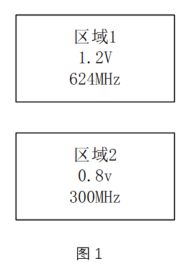
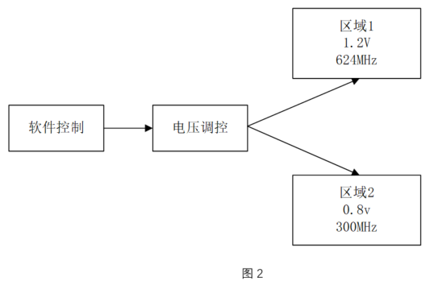
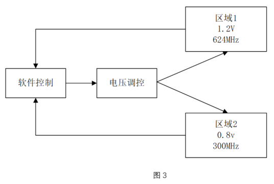

Before writing code, developing a comprehensive low-power plan at the system and architecture level can save more than 50% of power consumption. This type of low-power design is basically unrelated to code description and is usually designed by system and architecture personnel. Such personnel need rich hardware experience and a good overall grasp of the system. After the plan is formulated, it is handed over to functional designers (such as IC front-end designers, FPGA engineers, etc.) for implementation.
Multi-Voltage Technology
Generally speaking, the lower the voltage, the lower the power consumption, but the performance often becomes worse. Considering both power consumption and performance, different voltage designs can be adopted for different modules.
There are mainly 3 types of multi-voltage technology:
- 1. Each voltage domain has a fixed voltage, as shown in Figure 1.
- 2. Each voltage domain has a fixed voltage, and the voltage selection is controlled by software, as shown in Figure 2.
- 3. Adaptive method: the voltage of each domain is variable, and the voltage selection is also controlled by software, also called dynamic voltage scaling, as shown in Figure 3.



Generally speaking, the larger the supply voltage, the smaller the circuit delay and the higher the performance. For example, the processor core and memory of a chip generally require higher performance, so a higher voltage scheme can be adopted. Other external designs can use a lower voltage scheme to reduce power consumption.
System Clock Distribution
Generally speaking, the higher the frequency, the better the performance, but the greater the power consumption. Through reasonable clock distribution, power consumption can also be effectively reduced. There are generally the following methods:
1. By dividing the clock, each module uses a reasonable working clock
Generally, the CPU bus needs a higher clock to meet higher design requirements, while peripherals such as UART and SPI do not need very high operating frequencies. If all modules in the design use a uniformly high operating frequency, it will obviously increase unnecessary power consumption.
Divide the high-speed clock by a certain ratio and assign it to different modules respectively. While meeting performance requirements, using a lower working clock frequency can effectively reduce power consumption.
2. Add multiple low-power working modes
Adding multiple low-power clock distribution schemes in the design and manually selecting one working mode can reduce power consumption. The various low-power mode designs can be referred to as follows:
| Mode | Description |
|---|---|
| Normal | The main clock uses a higher-frequency PLL clock and sends it to the design circuit. |
| Slow | The main clock uses a lower local clock. |
| Low-Power | The bus clock is turned off, and only the working clocks of some peripherals are retained. |
| Sleep | All clocks are turned off, and the entire design enters a sleep state. |
3. Adaptive selection of operating frequency
Similar to the adaptive voltage adjustment of multi-voltage technology, selecting an appropriate operating frequency according to the current working state can also reduce power consumption.
For example, when a computer is processing some simple documents, it can choose a relatively low operating frequency; while when processing video rendering work, it needs a relatively high operating frequency.
Dynamic adjustment of operating frequency and voltage is often a strategy needed simultaneously in low-power design.
Software/Hardware Partitioning
The power consumption in a system is consumed by hardware units. During the design process, system functions can be implemented in hardware or software.
System designers estimate system performance (through simulation modeling) based on design specifications and their own experience, and decide which part is implemented in hardware and which part in software, thereby achieving the best balance between performance and power consumption. For example, calculating some parameters and directly inputting them to hardware after software calculation is a reasonable design.
In short, software/hardware partitioning can greatly reduce power consumption, which system designers need to carefully consider.
IP or Cell Library Selection
Many designs nowadays also rely on IP integration. When selecting IP, while meeting performance requirements, it is also necessary to reasonably choose IP with relatively lower power consumption.
The standard cell libraries used in designs, although implementing the same logic functions, may have different voltage thresholds due to different process libraries.
LVT (Low Voltage Threshold) has low threshold voltage and small saturation current, so this type of cell library has higher speed and larger leakage current.
HVT (High Voltage Threshold) cells have small leakage current but are slower.
SVT/RVT (Standard/Regular Voltage Threshold) performance is between LVT and HVT.
Therefore, when selecting standard cell libraries, it is necessary to consider both speed and power consumption.
For example, LVT cells can be used on critical paths, and HVT cells on non-critical paths.
Others
There are other system-level methods that can reduce power consumption, such as the following examples:
- Choose algorithms reasonably; for example, using lookup tables instead of multiplication and division operations can sometimes reduce some power consumption.
- Using handshake signals to complete asynchronous design and eliminating the global clock can also reduce power consumption.
- ……